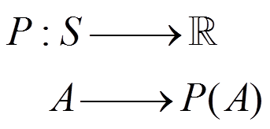
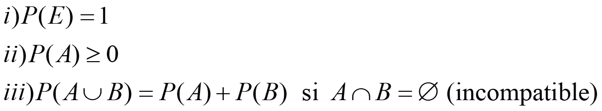
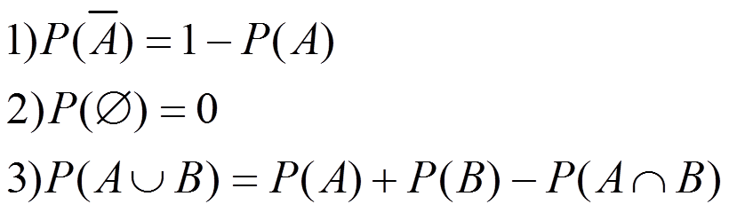

PROBABILIDAD
Probabilidad
Sea E el espacio muestral de un experimento aleatorio y S el conjunto de sucesos, entonces la probabilidad es una función:

que verifica:

Propiedades:

Ejemplo. El resultado de una encuesta hecha a estudiantes de Bachillerato en un instituto, dice que el 40 % lee un periódico que el 30 % lee una revista. Sabemos que el 20 % lee ambas cosas. Con estos datos, ¿cuál es la probabilidad de que, eligiendo un estudiante al azar, lea un periódico o una revista?
Sea P = {leer periódico} y R = {leer revista}. Las probabilidades son:
P(P) = 0,4 P(R) = 0,3 P(P∩R) = 0,2
Entonces:
P(PUR) = P(P) + P(R) – P(P∩R)= = 0,4 + 0,3 – 0,2 = 0,5
Obra publicada con Licencia Creative Commons Reconocimiento No comercial Compartir igual 3.0